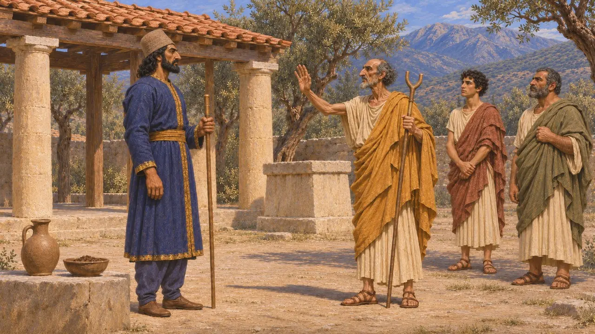
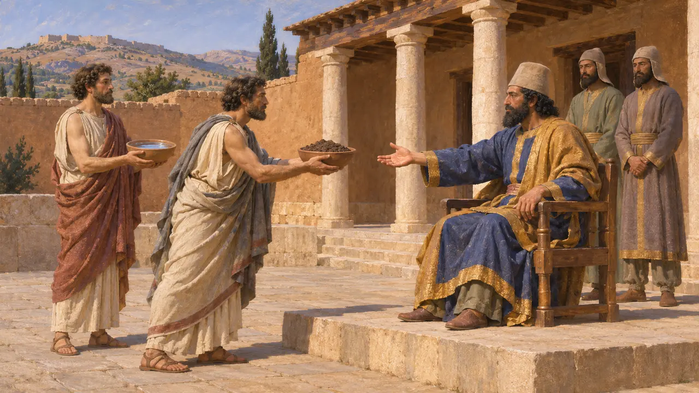
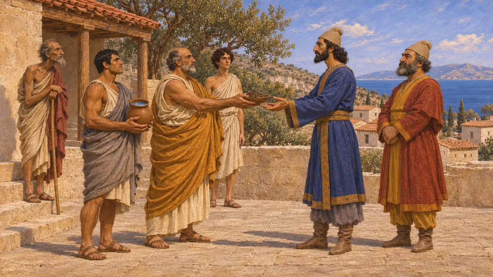
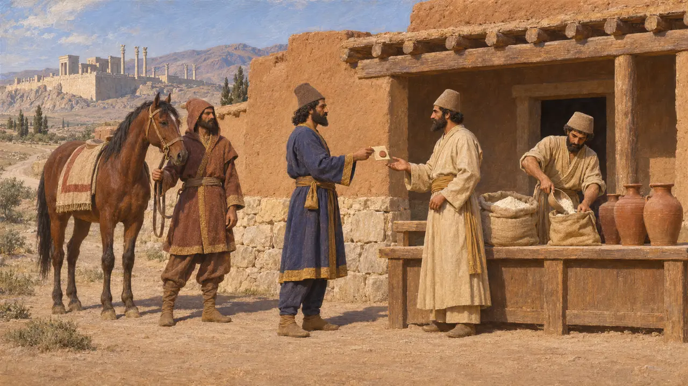
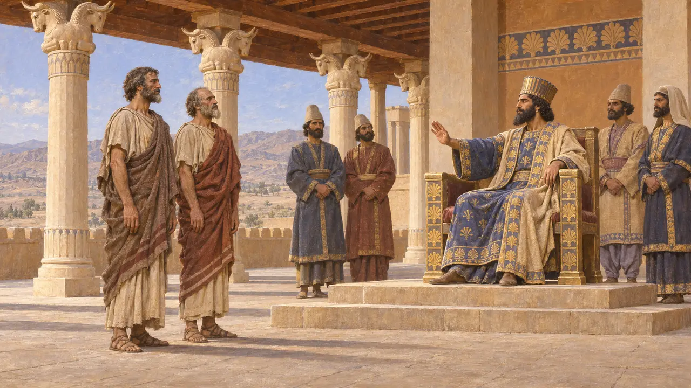

Arautos
Enviados que levavam a exigência de terra e água do Rei, c. 513-480 AEC
Os arautos eram emissários enviados para levar a mensagem de um governante e trazer uma resposta. Escritores gregos descrevem reis persas enviando-os a cidades e povos para pedir terra e água, sinal de submissão ao Rei. A forma como eram recebidos, da rendição voluntária ao assassinato, moldou as guerras entre a Pérsia e os gregos.
No jogo: O jogo mostra os arautos como enviados do Rei que pedem terra e água. Isso segue Heródoto; nenhuma inscrição ou tabuleta persa menciona o ritual de terra e água, de modo que a imagem apresentada pelo jogo se baseia em relatos gregos.

Um mensageiro sagrado
Relato antigoEntre os gregos, o arauto (keryx) era considerado sob proteção divina, e fazer-lhe mal era uma ofensa contra os deuses. Heródoto diz que em Esparta o cargo era hereditário numa família, os Taltibíadas, que traçavam sua linhagem até Taltíbio, arauto de Agamêmnon. Heródoto usa a mesma palavra para os homens que os reis persas enviavam, de modo que a ideia grega de um enviado inviolável colore suas histórias sobre os arautos persas.
Herodotus 7.134

O que significavam terra e água
DisputadoHeródoto trata a oferta de terra e água como sinal de que um povo aceitava o Rei como soberano. Os historiadores ainda debatem seu sentido exato: alguns veem nela um simples ato de entrega da terra e da água; outros, um acordo formal que obrigava ambas as partes. Heródoto diz que enviados atenienses em Sardes deram terra e água a Artafernes por volta de 507 AEC e foram censurados por isso em sua cidade, o que sugere que os atenienses talvez não tivessem compreendido o compromisso que assumiam.
Herodotus 5.73; A. Kuhrt, Earth and Water, 1988

Arautos enviados à Grécia
Relato antigoHeródoto diz que Dario enviou arautos por toda a Grécia, provavelmente em 491 AEC, para pedir terra e água. Ele relata que muitos gregos do continente as entregaram, assim como todos os ilhéus a que os arautos chegaram, entre eles Egina. Em 481 AEC, Xerxes enviou arautos a todos os Estados gregos, exceto Atenas e Esparta. Heródoto explica que os atenienses haviam atirado os arautos de Dario num fosso e os espartanos num poço, dizendo-lhes que buscassem dali a terra e a água.
Herodotus 6.48-49; Herodotus 7.32; Herodotus 7.133

Viajando a serviço do Rei
Nos registrosAs tabuinhas da Fortificação de Persépolis mostram como os viajantes oficiais circulavam pelo império. Enviados, mensageiros e suas escoltas levavam autorizações seladas e recebiam rações de farinha, cerveja ou vinho nas estações ao longo das estradas. As tabuinhas registram essas viagens de ida e volta a províncias distantes, mas nada dizem sobre terra e água, de modo que o lado persa do trabalho dos arautos é conhecido apenas em linhas gerais.
R. Hallock, Persepolis Fortification Tablets, 1969

Espértias e Búlis
Lenda posteriorHeródoto conta que, depois da morte dos arautos de Dario, os espartanos sofreram a ira de Taltíbio. Dois cidadãos, Espértias e Búlis, ofereceram-se para morrer na corte persa como expiação, mas Xerxes recusou-se a repetir o crime que atribuía a Esparta. Tucídides cita Aneristo e Nicolau entre os enviados espartanos executados em 430 AEC, homens que Heródoto diz serem seus filhos. Esses homens provavelmente existiram, mas a ira divina e a resposta do Rei pertencem a um conto moral.
Herodotus 7.134-137; Thucydides 2.67
Fontes
- Herodotus 6.48-49; 7.32; 7.131-137
- Herodotus 5.73
- A. Kuhrt, Earth and Water, 1988
- R. Hallock, Persepolis Fortification Tablets, 1969
- P. Briant, From Cyrus to Alexander, 2002
- Thucydides 2.67